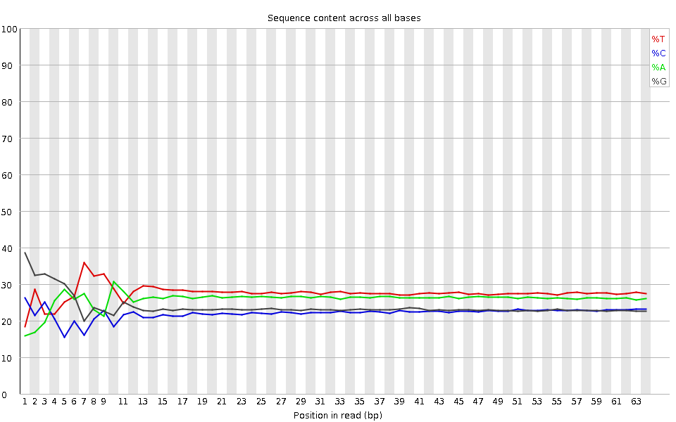
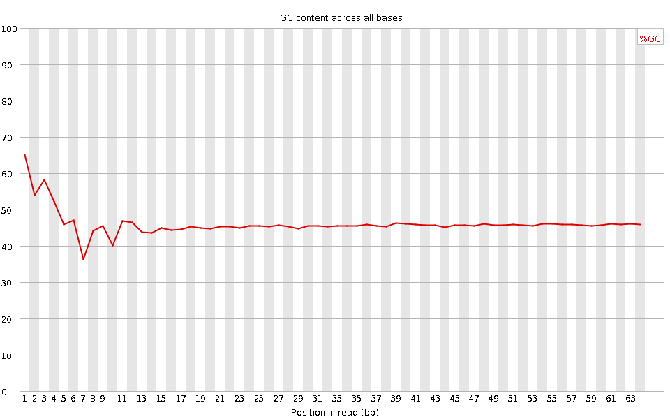
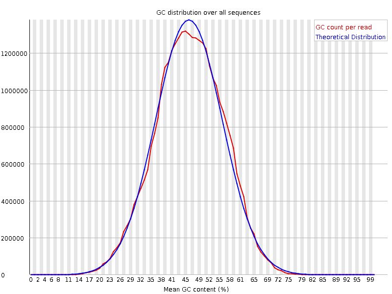
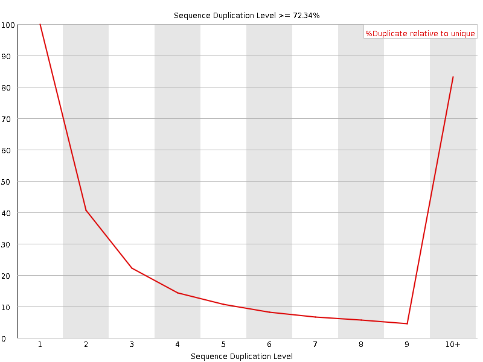
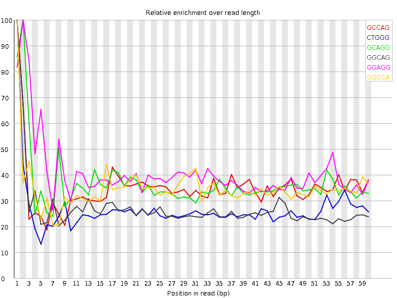

![[OK]](Icons/tick.png) Basic Statistics
Basic Statistics
| Measure | Value |
|---|---|
| Filename | SRR315326_pe_1.f.fastq |
| File type | Conventional base calls |
| Encoding | Sanger / Illumina 1.9 |
| Total Sequences | 21627547 |
| Filtered Sequences | 0 |
| Sequence length | 64 |
| %GC | 46 |
Per base sequence quality

Per sequence quality scores

![[FAIL]](Icons/error.png) Per base sequence content
Per base sequence content

Per base GC content

Per sequence GC content

Per base N content

Sequence Length Distribution

Sequence Duplication Levels

Overrepresented sequences
No overrepresented sequences
![[WARN]](Icons/warning.png) Kmer Content
Kmer Content

| Sequence | Count | Obs/Exp Overall | Obs/Exp Max | Max Obs/Exp Position |
|---|---|---|---|---|
| GCCAG | 2163770 | 2.2515008 | 6.4227667 | 1 |
| CTGGG | 2429030 | 2.2096994 | 8.330618 | 1 |
| GCAGG | 2201175 | 2.1286702 | 5.794242 | 2 |
| GGCAG | 2197775 | 2.1253824 | 7.8387055 | 1 |
| GGAGG | 2289060 | 2.0573294 | 5.0302143 | 2 |
| GGCCA | 1944350 | 2.023184 | 5.795317 | 1 |
| GCTGG | 2079085 | 1.8913529 | 5.837573 | 1 |
| GGGCA | 1955415 | 1.8910054 | 6.1354213 | 1 |
| GGGGG | 1910335 | 1.8697773 | 10.375151 | 2 |
| GGGAA | 2143450 | 1.7689942 | 6.447262 | 1 |
| TGGGG | 2004765 | 1.6949489 | 6.1522446 | 1 |
| GGGGA | 1883725 | 1.6930281 | 8.542143 | 1 |
| GGGAG | 1845320 | 1.658511 | 5.6789436 | 1 |
| GGGGT | 1908290 | 1.613383 | 7.6025467 | 3 |
| GGGTG | 1855290 | 1.5685738 | 6.107097 | 2 |
| GTGGG | 1775430 | 1.5010552 | 7.6720433 | 1 |
| GGGGC | 1361820 | 1.4341917 | 5.8089285 | 2 |
| CGGGG | 1131725 | 1.1918687 | 11.645659 | 1 |
| GGGTT | 1441825 | 1.052976 | 5.329202 | 3 |
| GCGGG | 537955 | 0.5665437 | 5.0190706 | 1 |